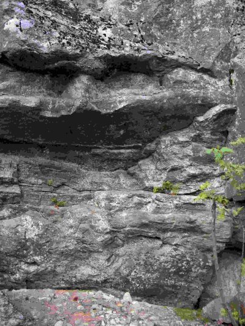

Gamla Södertäljevägen Boulder Betyg: 1 av 5
Leder: 2
Boulder: 5
Varianter: 2
Vägbeskrivning: Åk E4 mot södertälje, tag rönnige avfarten, och sväng höger, sedan vänster för att komma på gamla södertäljevägen. Kör ca 4km, håll utkik efter en rastplats, där ligger klippan. Leder: Två bultlinjer, grader okänt. Boulders:
A1. Bill, 7A - Catcha från juggen till slopern. Avslutas vid juggen ovanför hyllan. FA Johan Luhr 20011023
A2. 7C - ogjord, Inga grepp från A3 används. Starta på lägsta diagonala listen, gå rakt upp, kryp in i sloperhyllan. A2b. 7B - Samma som A2 fast börja stående med vänster på bra crimp ovanför diagonala listen och höger högt uppe på en mindre crimp. Etablera fötterna och fånga sidolisten med vänster hand, som är precis brevid slopern som används i A1. Catcha med höger till sloperhyllan och kryp in.

A3. Bull, 6B - Börjar på två incutlist, via pinch, till sloperhyllan. Kryp in. FA Johan Luhr 20011023
A4. 6A+ - Börjar på grepp i sprickan. Fånga crimplisterna runt hörnet och catcha till sloperhyllan. A5. 6C? - Följ sloperhyllan från A4 till A1, händerna enbart på sloperhyllan. Avsluta med att reversera A1. A6. ploj - Samma som A5 fast utan fötter :) A7. 7B? - ogjord, Travers från A1-juggen bortom A4an (runda hörnet).
A12. 6A - Börjar på två crimplister, fånga juggen i horiontala sprickan, och catcha upp till hyllan.
A14. 6A - Håll valfria grepp i nedersta hyllan. Catcha upp till första hyllan. A14. 6B+ - Håll valfria grepp i nedersta hyllan. Catcha upp till andra hyllan. A15. ?? - ogjord, som går under andra bultade turen. Starta på juggarna och gå till läppen. A16. 6B - Håll bägge juggarna, catcha upp till vänster sloper-hylla, gå vidare till upp till höger hylla och följ hyllorna ner till höger. A16. ?? - Travers från höger till A4.
Kategori:Stockholm
Copyright (C) Permission is granted to copy, distribute and/or modify this document under the terms of the GNU Free Documentation License, Version 1.3